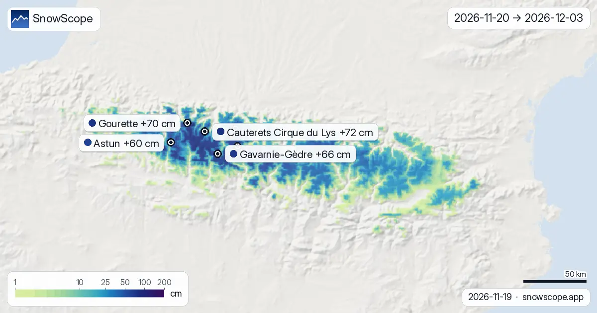
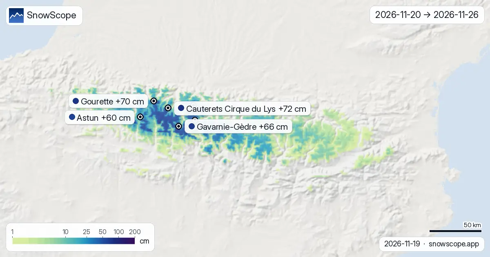

Pyrenees two-week outlook: 91 cm by early December, more in week 2
The Pyrenees will see snow arrive in two distinct phases over the next two weeks, with roughly half of all new snow falling by the end of week 1. The highest slopes, above 2500 m, will gather around 44 cm on average, while mid-mountain terrain at 2000–2500 m collects about 32 cm and lower elevations stay thin.
See the live snow forecast for Cauterets Cirque du Lys in the SnowScope appSnow depth, powder alerts and the 3D map, free.
Two pulses: first week fast, second week steady
The first week (20–26 November) will be the busier period. Cauterets Cirque du Lys is forecast to collect 44 cm in this span, with the peak days on 25–26 November when 12 cm falls. Gavarnie-Gèdre will see 50 cm in week 1, reaching its peak of 15 cm on 21 November. These are the resorts that benefit most from the opening storm system.
Week 2 (27 November–3 December) brings steadier but gentler snow. Cauterets will gain 29 cm across these seven days, while Gourette picks up 35 cm. The rhythm shifts to smaller daily amounts, but they add up. The final notable day is 3 December, when Gourette and other high resorts will see around 12 cm.
| Resort | Snow depth | New snow, 72 h | Coming, next days | Top |
|---|---|---|---|---|
| Cauterets Cirque du Lys | 9 cm | 8 cm | 22 cm | 2,420 m |
| Gourette | 9 cm | 8 cm | 20 cm | 2,453 m |
| Gavarnie-Gèdre | 3 cm | 4 cm | 10 cm | 2,283 m |
| Piau-Engaly | 15 cm | 13 cm | 17 cm | 2,527 m |
| Astun | 3 cm | 6 cm | 15 cm | 2,272 m |
| Grand Tourmalet | 6 cm | 7 cm | 14 cm | 2,464 m |

Altitude is everything in early season
This is where reliable accumulation happens and where early-season skiing becomes viable. The mid-mountain band (2000–2500 m) will typically see 32 cm, though some forecasts reach 51 cm.
Below 2000 m, snow is scarce and risky. At 1000–1500 m, only 1 cm median is expected, with large uncertainty between forecasts. Early-season snow at low elevation melts fast or exposes rock. Stick to upper slopes if you want continuous cover.

Where the Forecasts agree and where they diverge
ECMWF IFS and NOAA GFS both track the same incoming weather systems and agree that snow is coming. However, their detailed forecasts differ significantly. At Gourette, one the forecast shows as little as 27 cm total, while the other sees 112 cm—a large spread that reflects the difficulty of forecasting two weeks ahead.
The most reliable signals appear around 24–26 November in week 1 and 1–3 December in week 2, when both the forecast shows less disagreement. These windows are your best bets for confident timing.

Tracking snow coverage across the range
Three days ago (17 November), only 560 km² of the Pyrenees held snow. By 22 November, that area will jump to 1710 km². By 3 December, snow coverage expands to 3160 km². This rapid growth shows how the incoming systems will transform the landscape.
The key threshold is 50 cm depth: by early December, 1253 km² of terrain will hold at least that much snow—enough for sustained skiing and to contribute water to winter runoff. That is 2 percent of the total 70044 km² range, so coverage remains early-season thin. Above 2500 m is where most of this reliable depth will sit.
What to expect at individual resorts
Gavarnie-Gèdre leads week 1 with 50 cm total forecast, peaking on 21 November at 15 cm. Cauterets Cirque du Lys gets 44 cm in week 1 with its peak of 12 cm on 25–26 November. Piau-Engaly will accumulate 42 cm in week 1 and also peak on 25 November with 13 cm.
In week 2, Gourette stands out with 35 cm forecast, the same as Cauterets. Both will see 3 December as their heaviest day. Astun and Grand Tourmalet follow with similar totals, both splitting their 14-day snow roughly evenly between the two weeks.
Risk and timing for skiers
Early-season snow is thin everywhere until these systems arrive. Even at high altitude, rocks may be close beneath a fresh cover of 10–15 cm. After each peak snowfall day, allow 24–48 hours for settlement before venturing onto steep terrain.
The 25–26 November and 3 December peaks are worth planning for: they are the two best windows for fresh skiing. Use SnowScope to zoom into your chosen resort's upper slopes and track the forecast as the week unfolds—predictions can shift as the event approaches.
Tips for skiers
- Ski terrain above 2000 m from now until early December. The upper slopes at 2500 m and higher will offer the best snow-to-rock ratio and most stable cover for early season.
- Circle 25–26 November and 3 December as your prime days. Plan to ski the terrain 24–48 hours after each peak, once fresh snow has settled.
- Before going off-piste, consult the official avalanche bulletin for the Pyrenees. Fresh snow on steep slopes raises instability, especially where the existing snowpack is thin.
- Expect melt or refreezing at slopes below 1500 m. If new snow lands on a cold night, ice may form underneath; if temperatures hover near zero, surface melt and refreezing create crust.
- Use the SnowScope app to track daily changes at your resort's upper elevations over the next 14 days.
About these numbers
Resort snow depths are the deepest snow on the resort's upper slopes on the date shown; they are estimates for an area, not a measurement at one point. Forecasts can change. Always read the official avalanche bulletin before going off-piste.
Official avalanche bulletins: Météo-France / Meteocat / AEMET
Cite this report
For research, teaching or the press: the numbers and charts are free to reuse under CC BY 4.0 with this citation.
SnowScope (2026), Pyrenees two-week outlook: 91 cm by early December, more in week 2, https://snowscope.app/blog/en/2026/11/pyrenees-2-week-snow-forecast-maps-19-november-2026.html, accessed 2026-11-19
SnowScope (Atlas Labs). (2026, November 19). Pyrenees two-week outlook: 91 cm by early December, more in week 2. SnowScope snow reports. https://snowscope.app/blog/en/2026/11/pyrenees-2-week-snow-forecast-maps-19-november-2026.html
BibTeX
@misc{snowscope2026pyrenees2weeksnowforecas,
author = {{SnowScope (Atlas Labs)}},
title = {Pyrenees two-week outlook: 91 cm by early December, more in week 2},
year = {2026},
month = nov,
howpublished = {\url{https://snowscope.app/blog/en/2026/11/pyrenees-2-week-snow-forecast-maps-19-november-2026.html}},
note = {Published 2026-11-19 12:26 UTC; accessed 2026-11-19}
}· CC BY 4.0 · Methods, data and tools →
Cauterets Cirque du Lys: snow and temperature by height, this winter vs last (tools) →
Follow Cauterets Cirque du Lys
Free: a message when fresh snow is coming, and the forecast every morning.
More snow reports

Cauterets Cirque du Lys leads the Pyrenees with 24 cm at the top on 22 November. Heavy snow forecast for 25 November will push coverage from 44 to 51 resorts.

Mixed rain and snow expected across the Pyrenees over the next three days, with the freezing level rising above resort summits by Sunday. New snow forecast between 13–24 cm at altitude.

For a low-cost December family ski week at Astún-Candanchú, aim for late December when top slopes hold good snow in 67 % of past winters.